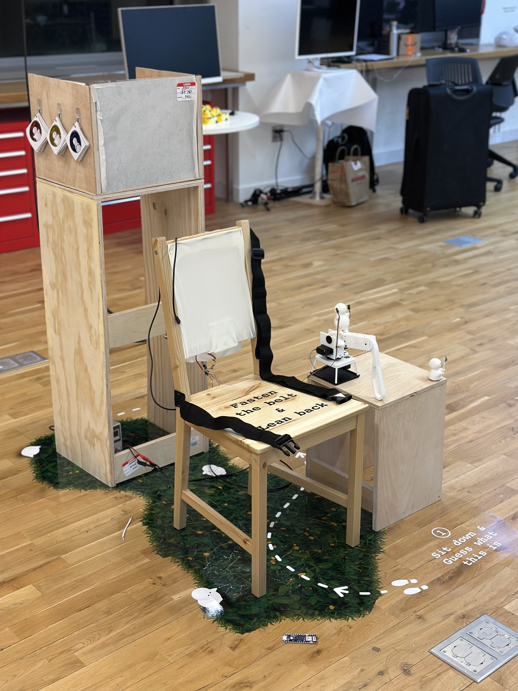
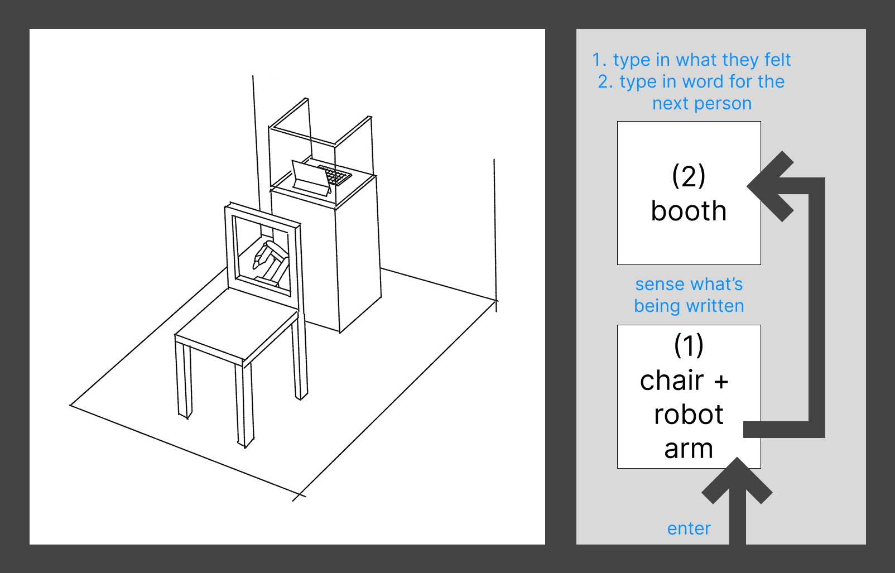
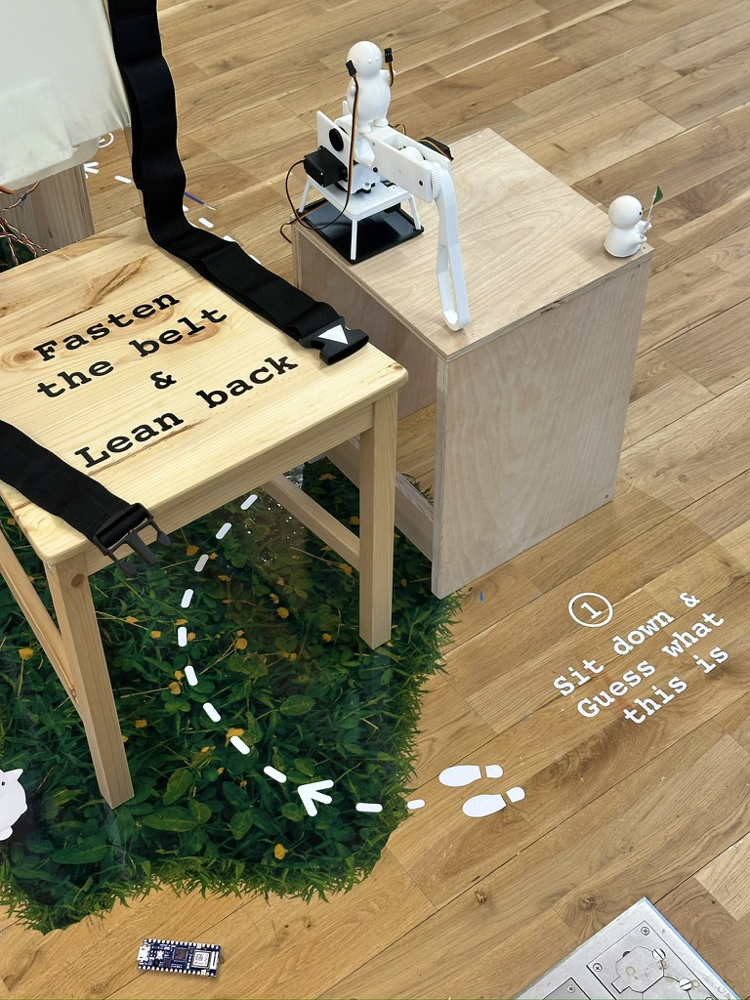
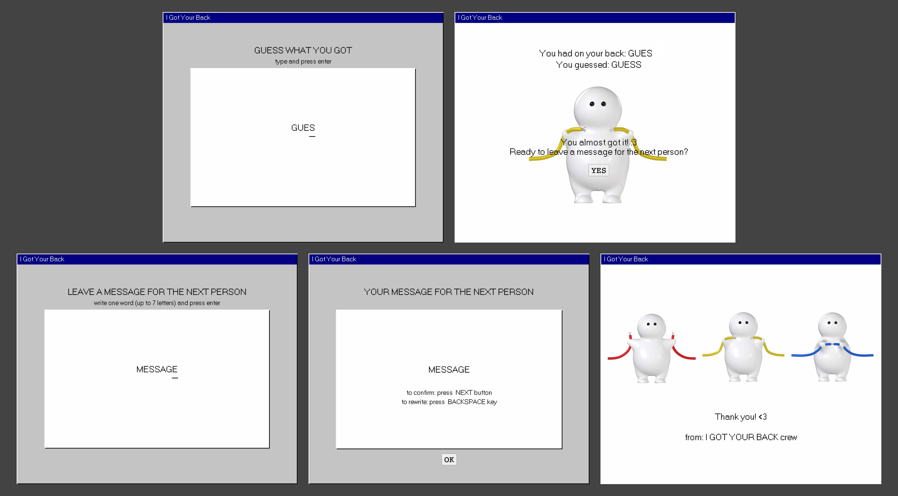
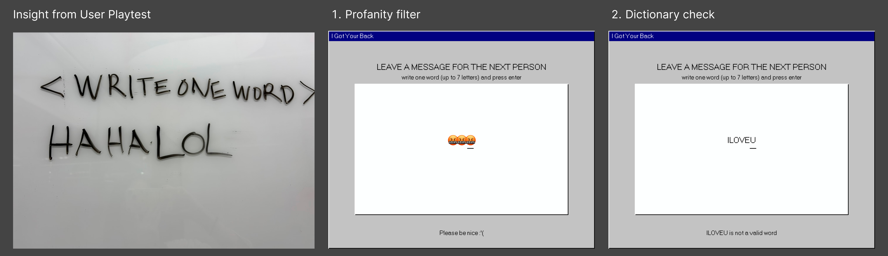

I Got Your Back (2024)

Project Description
A mechanical recreation of a childhood game, where friends would write messages on your back and you had to focus on the feeling to get it right. What does communication look like when you use different senses? What happens when a computer and a robot arm is the intermediary?
Technology
robotics, serial communication, interaction design
My Role
Collaborators
Jiyou Park, Seungyun Yang
As seen in the 2024 ITP Winter Show
User Experience Flow


Screen Interaction Flow

Screen interaction

Screen interactions added after a user playtest